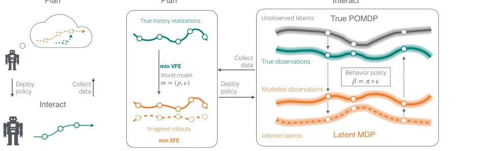
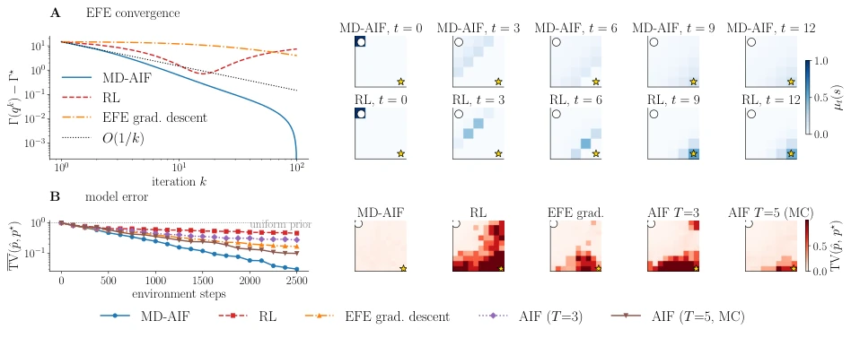

This paper attempts to clothe Active Inference (AIF) in the tight suit of Reinforcement Learning (RL), claiming EFE minimization is essentially a convex MDP. The theoretical packaging is elegant, interpreting cognitive value as a negative entropy nonlinear term, successfully introducing the Mirror Descent algorithm and convergence guarantees. However, this resembles more of a "theoretical plastic surgery"; experiments are only verified on simple Gridworld, and stability after closed-loop model updates remains at the level of existence proofs, lacking practical algorithmic guarantees. While forcibly mapping AIF to the RL framework enhances interpretability, it may sacrifice the flexibility of Bayesian inference. Although the convergence rate theory is elegant, the cumulative effect of model errors in actual deployment is not fully discussed. Nevertheless, incorporating AIF into the realm of convex optimization indeed paves the way for future integration with modern optimization theory, at least superior to pure black-box guessing.
Although Model-based Policy Optimization (MBPO) [1] already has mature convergence theory in RL, the optimization properties of Active Inference (AIF) [2, 3] have long been vague. Whether EFE minimization has a unique solution and whether it converges, the academic community has no conclusion, which hinders the transfer of efficient algorithms. Existing AIF implementations mostly rely on heuristics, lacking policy improvement guarantees like RL, leading to difficulty in scaling in complex tasks. This paper aims to incorporate AIF into the modern RL toolbox from a convex optimization perspective, addressing its weak theoretical foundation, particularly stability under closed-loop model updates, and providing mathematical rigor for AIF.
Overall, it adopts an episodic policy optimization framework, alternately executing model learning (VFE minimization) and policy optimization (EFE minimization). The core innovation lies in proving that EFE minimization under a fixed model is equivalent to a convex MDP: the linear term corresponds to the potential MDP reward, and the nonlinear term is the state marginal negative entropy (cognitive value). Algorithmically, MD-AIF is proposed, utilizing Mirror Descent to locally linearize the convex objective, transforming it into a soft RL problem for solution, achieving an O(1/K) convergence rate. In specific implementation, the value function is calculated via soft Bellman backup, the policy is updated using softmax, and it is compatible with dynamic programming. In the closed-loop phase, the model updates with policy data, forming a Performative RL structure, proving the existence of a stable policy-model pair, providing a foundation for theoretical analysis.

Figure 1: The episodic active inference setting considered in this work: A) the environment admits a true partially observable decision process, while the agent learns a latent fully observable process using variational inference. B) In contrast to standard variational inference, the two decision processes are coupled: the variational distribution ν is used both in variational model learning and in action selection through the behavior policy β = π ◦ν. The agent acts in the environment using the behavior policy β = π ◦ν for multiple episodes, then uses the data to fit its model by Variational Free Energy (VFE) minimization to obtain m = (p, ν), and uses that model to optimize its policy in imagination by minimizing the Expected Free Energy (EFE).
Tested on deterministic Gridworld environments (5x5, 10x10). Baselines include novelty-free RL and EFE gradient descent. Evaluation metrics are EFE convergence value and Total Variation (TV) error of model fit. Results show MD-AIF convergence speed aligns with the O(1/K) theory and reduces model error faster than baselines. Policy occupancy distribution indicates MD-AIF explores states extensively before reaching the target, whereas RL tends towards direct paths. Under pure cognitive-driven settings, MD-AIF achieves broader state coverage through information gain, accelerating model identification, validating the effectiveness of the convex MDP framework in embodied exploration, although the environment remains relatively simple.

Figure 2: MD-AIF on gridworld environments. (A, top two rows) 5×5 deterministic gridworld. Left: EFE convergence (log–log scale) for MD-AIF, RL (no novelty), and EFE gradient descent, together with the theoretical O(1/k) rate (dashed). MD-AIF converges faster and to a lower value, driven by regularized dynamic programming. Right: Per-step imagined occupancy ρt(s) at convergence (k = 100) for MD-AIF (top) and RL (bottom) at five timesteps t ∈{0, 3, 6, 9, 12}. MD-AIF spreads probability mass broadly across the grid before concentrating toward the goal, whereas RL greedily channels mass along the direct path. Both rows share the same color scale. (B) 10 × 10 deterministic gridworld with uniform preference (pure epistemic drive). Left: Mean total-variation error TV(ˆp, p⋆) of the model fit as